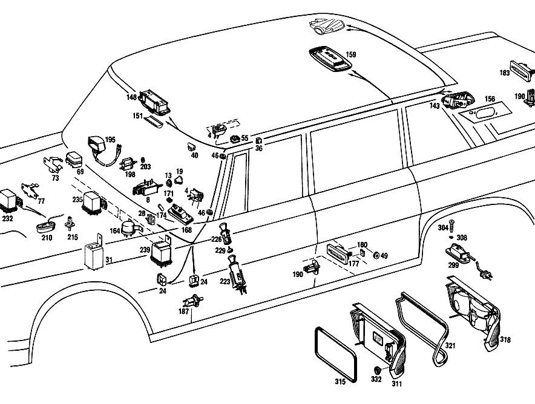

| № | Артикул | Название | Кол. | Примечание | Ограничение |
|---|---|---|---|---|---|
| 4 | A 001 821 03 51 | ВЫКЛЮЧАТЕЛЬ | 3 | ПЛАФОН ПОТОЛОЧНЫЙ | |
| 8 | A 001 821 61 51 | ВЫКЛЮЧАТЕЛЬ | 1 | ОБОГРЕВ ЗАДНЕГО СТЕКЛА [003] FROM CHASSIS 001530-001978 | |
| 13 | A 110 545 00 72 | ГАЙКА | 1 | [001] UP TO CHASSIS 001138 | |
| 19 | A 110 820 03 92 | КНОПКА | 1 | [001] UP TO CHASSIS 001138 | |
| 24 | A 002 545 49 28 | ШТЕКЕР | - | ||
| 24 | A 008 545 37 28 | Сцепление, механическое | 3 | 2\-POLE; 2\-PIN | |
| 28 | A 002 545 24 28 | ШТЕКЕР | - | ||
| 28 | A 009 545 40 28 | Сцепление, механическое | 1 | 2\-PIN; 2\-PIN | |
| 31 | A 107 820 00 10 | Реле | 1 | ОБОГРЕВ ЗАДНЕГО СТЕКЛА [004] FROM CHASSIS 001979 | |
| 36 | A 000 988 88 78 | СКОБА | - | 13X14 MM | |
| 36 | A 003 988 79 78 | СКОБА | 16 | ||
| 40 | A 000 988 17 78 | СКОБА | 2 | ||
| 46 | A 000 997 20 81 | Проходная втулка | 2 | ||
| 49 | A 000 997 31 81 | Проходная втулка | 7 | ||
| 55 | A 002 988 48 78 | Скоба | 2 | 2\-PIN LAMP, REAR DOOR | |
| 69 | A 001 545 62 28 | КОРПУС ШТЕКЕРА | 2 | 5\-PIN [010] UP TO CHASSIS 000842 | |
| 73 | A 100 821 01 14 | ДЕРЖАТЕЛЬ | 2 | ||
| 77 | A 100 820 00 14 | ДЕРЖАТЕЛЬ | 1 | ||
| 82 | A 100 820 04 42 | ЭЛЕКТРОМОТОР | 1 | ||
| 85 | A 100 824 00 10 | - КРИВОШИП | 1 | ||
| 88 | A 111 997 11 40 | УПЛОТНИТ. КОЛЬЦО | - | ||
| 88 | A 115 997 10 40 | УПЛОТНИТ. КОЛЬЦО | - | ||
| 88 | A 201 987 02 41 | Резиновое кольцо | 3 | ||
| 92 | A 100 824 00 97 | ПОДКЛАДКА | 1 | ||
| 96 | A 000 990 27 91 | ГАЙКОДЕРЖАТЕЛЬ | - | ||
| 96 | A 000 990 22 91 | ГАЙКОДЕРЖАТЕЛЬ | 3 | [402] БОЛЬШЕ НЕ ПОСТАВЛЯЕТСЯ | |
| 99 | A 100 820 00 43 | ТЯГИ | 1 | ||
| 104 | A 000 987 07 41 | КОЛЬЦО РЕЗИНОВОЕ | 2 | ||
| 119 | A 100 820 01 44 | РЫЧАГ СТЕКЛООЧИСТИТЕЛЯ | - | [015] UP TO CHASSIS 001971 | |
| 119 | A 100 820 05 44 | РЫЧАГ СТЕКЛООЧИСТИТЕЛЯ | 1 | СЛЕВА [016] FROM CHASSIS 001972 | |
| 123 | A 000 824 22 82 | Диск | 2 | ||
| 126 | A 002 990 26 51 | гайка | 2 | ||
| 129 | A 110 824 04 72 | Капсула | 2 | [402] БОЛЬШЕ НЕ ПОСТАВЛЯЕТСЯ | |
| 132 | A 000 990 12 53 | гайка | 2 | [015] UP TO CHASSIS 001971 | |
| 135 | A 000 990 17 48 | Диск | 2 | ||
| 137 | A 100 820 01 45 | ЩЕТКА СТЕКЛООЧИСТИТЕЛЯ | - | ||
| 140 | A 000 824 06 27 | - РЕЗИНКА СТЕКЛООЧИСТИТЕЛЯ | 2 | 400 MM | |
| 143 | A 100 820 03 52 | ЛАМПА ДЛЯ ЧТЕНИЯ | 1 | СЛЕВА | |
| 148 | A 108 820 00 52 | ЛАМПА ДЛЯ ЧТЕНИЯ | 1 | [023] UP TO CHASSIS 001028 | |
| 151 | A 186 825 00 10 | - РАССЕИВАТЕЛЬ | 1 | [023] UP TO CHASSIS 001028 | |
| 156 | A 100 820 03 97 | ПОДКЛАДКА | 1 | СЛЕВА [021] FROM CHASSIS 000390-000481 [025] ENCLOSE SAMPLE OF VENEER WHEN ORDERING | |
| 159 | A 100 820 00 01 | ПЛАФОН ОСВЕЩЕНИЯ САЛОНА | 1 | ||
| 164 | A 002 821 01 51 | Переключатель | 1 | ПЛАФОН ПОРОГА | |
| 168 | A 100 820 01 62 | ФОНАРЬ ОСВЕЩ. НОМЕР.ЗНАКА | 2 | ||
| 171 | A 000 994 25 45 | Пружинная гайка самореза | 4 | 3.3MM | |
| 174 | A 094 997 59 02 | Соед. муфта для шлангов | 2 | 5X2X25 MM | |
| 177 | A 100 820 01 62 | ФОНАРЬ ОСВЕЩ. НОМЕР.ЗНАКА | 2 | ||
| 180 | A 000 994 20 45 | ПРЕДОХРАНИТЕЛЬ | - | ||
| 180 | A 000 994 82 45 | предохранитель | 4 | ||
| 183 | A 100 820 01 62 | ФОНАРЬ ОСВЕЩ. НОМЕР.ЗНАКА | 1 | ||
| 187 | A 000 821 13 52 | Переключатель | 1 | СЛЕВА [038] FROM CHASSIS 001435 | |
| 190 | A 000 821 02 52 | ВЫКЛЮЧАТЕЛЬ КОНТАКТНЫЙ | 3 | ||
| 195 | A 113 820 00 52 | ЛАМПА ДЛЯ ЧТЕНИЯ | 1 | ||
| 198 | A 000 821 08 52 | ВЫКЛЮЧАТЕЛЬ КОНТАКТНЫЙ | 1 | ВЕЩЕВОЙ ЯЩИК [402] БОЛЬШЕ НЕ ПОСТАВЛЯЕТСЯ | |
| 203 | A 000 990 05 57 | ГАЙКА | 1 | ||
| 210 | A 100 825 01 42 | ПЛАФОН ПОРОГА | 1 | МОТОРНЫЙ ОТСЕК [011] FROM CHASSIS 000740 | |
| 215 | A 000 821 06 52 | ВЫКЛЮЧАТЕЛЬ КОНТАКТНЫЙ | 1 | МОТОРНЫЙ ОТСЕК [027] FROM CHASSIS 001317 | |
| 223 | A 110 825 05 53 | ПРИКУРИВАТЕЛЬ | 2 | ДВЕРЬ ВОДИТЕЛЯ | |
| 226 | A 000 825 05 51 | - ВСТАВКА | 4 | ||
| 229 | A 000 825 06 52 | - СПИРАЛЬ НАКАЛИВАНИЯ | - | ||
| 229 | A 000 825 02 52 | - Прикуриватель | 4 | ||
| 232 | A 000 542 58 19 | Контактор | 0 | ||
| 232 | A 000 542 58 19 | Контактор | 1 | HEATING WATER PUMP SOLENOID VALVE [029] UP TO CHASSIS 000047 | |
| 232 | A 000 542 58 19 | Контактор | 1 | AIR CONDITIONER MAIN CONTROL BOX [029] UP TO CHASSIS 000047 | |
| 232 | A 000 542 58 19 | Контактор | 1 | БЛОК ПРАВЛЕНИЯ КОНДИЦ. [029] UP TO CHASSIS 000047 | |
| 235 | A 000 542 59 19 | Контактор | 1 | БЛОК ПРАВЛЕНИЯ КОНДИЦ. [029] UP TO CHASSIS 000047 | |
| 239 | A 000 542 68 19 | Реле | 2 | WIPER MOTOR AND DOME LAMP | |
| 244 | A 100 820 18 61 | БЛОК-ФАРА | 2 | LESS SEALED BEAM UNIT AND LESS DECORATIVE RIM [038] FROM CHASSIS 001435 | |
| 250 | A 000 826 82 89 | - Кольцо крышки | 2 | ||
| 254 | A 001 826 46 90 | - РАССЕИВАТЕЛЬ | 2 | [038] FROM CHASSIS 001435 | |
| 258 | A 000 826 42 80 | - УПЛОТНИТЕЛЬ | 2 | [038] FROM CHASSIS 001435 | |
| 260 | A 000 826 49 82 | - ЛАМПОВЫЙ ПАТРОН | 2 | [037] UP TO CHASSIS 001434 | |
| 263 | A 000 826 55 82 | - ЛАМПОВЫЙ ПАТРОН | 2 | [038] FROM CHASSIS 001435 [048] TO BE USED UP LESS DIODES;UP TO CHASSIS 001891 | |
| 268 | A 100 826 05 89 | ОБОДОК КРЫШКИ | 2 | ||
| 273 | A 000 826 35 99 | ВСТАВКА ФАРЫ | - | ||
| 273 | A 000 826 64 99 | ВСТАВКА ФАРЫ | - | ||
| 273 | A 000 826 66 99 | ВСТАВКА ФАРЫ | 2 | ||
| 299 | A 100 820 00 62 | ФОНАРЬ ОСВЕЩ. НОМЕР.ЗНАКА | 2 | ||
| 304 | A 110 990 05 21 | БОЛТ | - | ||
| 304 | N 007985 004112 | Винт | - | ||
| 304 | N 007985 004136 | Винт | 4 | M4X12 | |
| 308 | N 000137 004202 | Пружинная шайба | 4 | ||
| 311 | A 100 820 01 64 | БЛОК ЗАДНИХ ФОНАРЕЙ | 1 | СЛЕВА [038] FROM CHASSIS 001435 | |
| 315 | A 100 826 00 58 | - УПЛОТНИТЕЛЬ | - | ||
| 315 | A 000 987 02 33 | - РЕЗИН. ПРОФИЛЬ | 2 | ||
| 318 | A 100 826 01 52 | - КРЫШКА | - | ||
| 318 | A 100 820 01 64 | - БЛОК ЗАДНИХ ФОНАРЕЙ | 1 | СЛЕВА [038] FROM CHASSIS 001435 | |
| 321 | A 100 826 01 58 | - УПЛОТНИТЕЛЬ | 1 | СЛЕВА | |
| 332 | A 111 990 00 57 | Гайковерт | 8 | ||
| 344 | A 001 544 70 32 | ДАТЧИК | 1 | МИГАЮЩИЙ СВЕТ [038] FROM CHASSIS 001435 | |
| 350 | A 115 820 17 92 | Кнопка | 1 | [038] FROM CHASSIS 001435 | |
| 354 | A 115 821 04 03 | Декоративная розетка | 1 | [038] FROM CHASSIS 001435 | |
| 355 | A 100 820 19 15 | ЭЛ. ПРОВОД | 1 | ||
| 356 | A 002 545 20 28 | - ШТЕКЕР | - | ||
| 356 | A 002 545 74 28 | - КОРПУС ШТЕК. ГНЕЗДА | 1 | PLUG, 12\-PIN | |
| 357 | A 002 545 44 28 | - ШТЕКЕР | - | ||
| 357 | A 005 545 13 28 | - ШТЕКЕР | - | ||
| 357 | A 006 545 80 28 | - CONTACT SUPPORT | 1 | CABLE CONNECTOR, 6\-POLE; 6\-PIN | |
| 358 | A 000 820 53 56 | ФОНАРЬ НАРУЖНЫЙ | 1 | ЗАДНИЙ ПРОТИВОТУМАННЫЙ ФОНАРЬ [031] FROM CHASSIS 002293 | |
| 361 | A 002 826 16 90 | - РАССЕИВАТЕЛЬ | 1 | [031] FROM CHASSIS 002293 | |
| 364 | A 000 826 93 80 | - УПЛОТНИТЕЛЬ | 1 | [031] FROM CHASSIS 002293 | |
| 368 | A 115 826 06 14 | ДЕРЖАТЕЛЬ | 1 | [031] FROM CHASSIS 002293 | |
| 371 | N 007985 005157 | Винт | 2 | M5X10\-4.8 [031] FROM CHASSIS 002293 | |
| 373 | N 000137 005203 | Пружинная шайба | 2 | [031] FROM CHASSIS 002293 | |
| 376 | N 000125 006421 | Шайба | 1 | ||
| 376 | N 000125 006449 | Шайба | 1 | [031] FROM CHASSIS 002293 | |
| 379 | N 000934 006007 | Гайка | 1 | [031] FROM CHASSIS 002293 | |
| 383 | A 001 821 61 51 | ВЫКЛЮЧАТЕЛЬ | 1 | ЗАДНИЙ ПРОТИВОТУМАННЫЙ ФОНАРЬ [031] FROM CHASSIS 002293 | |
| 386 | A 115 820 14 92 | КНОПКА | 1 | [031] FROM CHASSIS 002293 | |
| 388 | A 115 821 04 03 | Декоративная розетка | 1 | [031] FROM CHASSIS 002293 | |
| 391 | A 100 820 32 15 | ЭЛ. ПРОВОД | 1 | [031] FROM CHASSIS 002293 | |
| 394 | A 002 545 52 28 | - ШТЕКЕР | - | ||
| 394 | A 004 545 86 28 | - Штекер | - | ||
| 394 | A 007 545 00 28 | - КОРПУС ШТЕК. ГНЕЗДА | - | ||
| 394 | A 015 545 49 28 | - КОРПУС ШТЕК. ГНЕЗДА | 1 | 4\-PIN | |
| 394 | A 014 545 85 28 | - КОРПУС ШТЕК. ГНЕЗДА | 1 | 3\-POLE [402] БОЛЬШЕ НЕ ПОСТАВЛЯЕТСЯ [031] FROM CHASSIS 002293 | |
| 397 | A 000 545 47 28 | - Сцепление, механическое | 1 | SINGLE [031] FROM CHASSIS 002293 | |
| 400 | A 115 820 65 15 | ЭЛ. ПРОВОД | 1 | 1420 MM [031] FROM CHASSIS 002293 | |
| 403 | A 000 545 49 28 | - ШТЕКЕР | - | ||
| 403 | A 004 545 84 28 | - ШТЕКЕР | - | ||
| 403 | A 126 540 10 81 | - Штекер | 1 | SINGLE [031] FROM CHASSIS 002293 | |
| 406 | A 115 997 18 81 | - КАБ. ВТУЛКА | - | ||
| 406 | A 110 997 15 81 | - резиновая втулка | 1 | [031] FROM CHASSIS 002293 | |
| 409 | A 001 997 41 90 | Кабельная стяжка | 1 | 7X100 MM [031] FROM CHASSIS 002293 | |
| 412 | A 002 988 43 78 | СКОБА | - | ||
| 412 | A 000 988 33 78 | Скоба | 2 | [031] FROM CHASSIS 002293 | |
| 415 | A 000 995 98 01 | ХОМУТ | - | ||
| 415 | A 115 995 01 01 | ХОМУТ | 5 | [031] FROM CHASSIS 002293 | |
| 420 | A 000 826 03 41 | Боковой отражатель | 1 | СПЕРЕДИ СЛЕВА [038] FROM CHASSIS 001435 | |
| 425 | A 000 826 14 57 | - Рассеиватель фонаря | 2 | [412] БОЛЬШЕ НЕ ПОСТАВЛЯЕТСЯ, ЗАКАЗЫВАТЬ ОТДЕЛЬНЫЕ ДЕТАЛИ [402] БОЛЬШЕ НЕ ПОСТАВЛЯЕТСЯ [038] FROM CHASSIS 001435 | |
| 431 | A 002 545 24 28 | - ШТЕКЕР | - | ||
| 431 | A 009 545 40 28 | - Сцепление, механическое | 2 | 2 ШТ.; 2\-PIN [038] FROM CHASSIS 001435 | |
| 435 | A 115 997 20 81 | - втулка | 2 | [038] FROM CHASSIS 001435 | |
| 439 | A 000 826 01 41 | Боковой отражатель | 1 | СЗАДИ СЛЕВА [038] FROM CHASSIS 001435 | |
| 443 | A 000 826 15 57 | - Рассеиватель фонаря | 2 | [038] FROM CHASSIS 001435 | |
| 451 | A 115 820 01 10 | ВЫКЛЮЧАТЕЛЬ | - | ||
| 451 | A 115 820 02 10 | ВЫКЛЮЧАТЕЛЬ | 1 | SAFETY BELT WARNING DEVICE | |
| 456 | A 002 545 24 28 | ШТЕКЕР | - | ||
| 456 | A 009 545 40 28 | Сцепление, механическое | 1 | 2\-PIN | |
| 464 | A 000 997 23 81 | Проходная втулка | 1 | ||
| A 000 821 61 51 | ВЫКЛЮЧАТЕЛЬ | - | |||
| A 100 821 00 51 | ВЫКЛЮЧАТЕЛЬ | - | [001] UP TO CHASSIS 001138 | ||
| A 001 821 40 51 | ВЫКЛЮЧАТЕЛЬ | - | [002] FROM CHASSIS 001139-001529 | ||
| A 001 821 82 51 | Переключатель | 1 | ОБОГРЕВ ЗАДНЕГО СТЕКЛА [004] FROM CHASSIS 001979 | ||
| N 072601 012800 | - Лампа накаливания | 1 | 12V/2W [001] UP TO CHASSIS 001138 | ||
| N 072601 012230 | - Лампа накаливания | 1 | 12V\-1.2W [005] FROM CHASSIS 001139 | ||
| A 115 821 04 03 | Декоративная розетка | 1 | [005] FROM CHASSIS 001139 | ||
| A 000 997 20 40 | УПЛОТНИТ. КОЛЬЦО | 1 | [001] UP TO CHASSIS 001138 | ||
| A 115 820 01 92 | КНОПКА | - | |||
| A 115 820 15 92 | КНОПКА | - | |||
| A 115 820 17 92 | Кнопка | 1 | [002] FROM CHASSIS 001139-001529 | ||
| A 115 820 11 92 | КНОПКА | - | |||
| A 115 820 16 92 | КНОПКА | - | [401] ИСПОЛЬЗОВАТЬ СТАРЫЙ НОМЕР ДЕТАЛИ [007] FROM CHASSIS 001530-002338 | ||
| A 115 820 23 92 | Кнопка | 1 | [040] FROM CHASSIS 001530 | ||
| A 183 997 00 81 | втулка | 1 | |||
| A 000 545 30 28 | ШТЕКЕР | - | |||
| A 000 545 71 28 | ШТЕКЕР | - | |||
| A 107 820 01 10 | ВЫКЛЮЧАТЕЛЬ | 1 | ОБОГРЕВ ЗАДНЕГО СТЕКЛА [004] FROM CHASSIS 001979 | ||
| A 000 545 71 28 | ШТЕКЕР | - | |||
| A 002 545 24 28 | ШТЕКЕР | - | |||
| A 009 545 40 28 | Сцепление, механическое | 1 | 2\-PIN CABLE HARNESS TO TRUNK LID; 2\-PIN | ||
| A 000 988 17 78 | СКОБА | 3 | 2\-PIN CABLE HARNESS TO TRUNK LID | ||
| A 000 997 21 81 | втулка | - | |||
| A 000 545 35 28 | Сцепление, механическое | 4 | 6\-PIN [009] FROM CHASSIS 000792 | ||
| A 000 545 30 28 | ШТЕКЕР | - | |||
| A 002 545 49 28 | ШТЕКЕР | - | |||
| A 008 545 37 28 | Сцепление, механическое | 8 | 2 POLE, для ENTRANCE LAMP; 2\-PIN | ||
| A 000 545 71 28 | ШТЕКЕР | - | |||
| A 002 545 24 28 | ШТЕКЕР | - | |||
| A 009 545 40 28 | Сцепление, механическое | 2 | 2\-PIN LAMP, REAR DOOR; 2\-PIN | ||
| A 000 545 07 19 | ПАТРОН | - | |||
| A 000 544 25 93 | Ламповый патрон | 6 | 2\-PIN LAMP, REAR DOOR | ||
| N 072601 012800 | Лампа накаливания | 6 | 2\-PIN LAMP, REAR DOOR; 12V/2W | ||
| A 002 988 14 78 | СКОБА | - | |||
| A 000 988 88 78 | СКОБА | - | 13X14 MM | ||
| A 003 988 79 78 | СКОБА | 4 | 2\-PIN LAMP, REAR DOOR | ||
| N 007981 003214 | Шуруп | 4 | B3,9X9,5 | ||
| A 094 988 15 00 | Скоба | 9 | [011] FROM CHASSIS 000740 | ||
| A 000 997 17 81 | резиновая втулка | 1 | [011] FROM CHASSIS 000740 | ||
| A 100 820 00 42 | ЭЛЕКТРОМОТОР | - | |||
| A 000 824 20 75 | - УГОЛНЫЕ ЩЕТКИ К-Т | - | [402] БОЛЬШЕ НЕ ПОСТАВЛЯЕТСЯ | ||
| N 000931 006081 | БОЛТ | 3 | |||
| A 094 990 68 10 | Пружинное кольцо | 3 | |||
| N 000931 006079 | БОЛТ | 4 | [402] БОЛЬШЕ НЕ ПОСТАВЛЯЕТСЯ | ||
| N 912004 006103 | Пружинное кольцо | 4 | |||
| N 009021 006103 | Шайба | - | |||
| N 009021 006208 | Шайба | 4 | 6 MM | ||
| A 000 983 02 10 | Полоски | 1 | 680 MM [404] ЗАКАЗЫВАТЬ ПОГОННЫМИ МЕТРАМИ | ||
| N 000933 006103 | Винт | - | |||
| N 304017 006018 | Винт с 6-гранной головкой | 2 | CONNECTOR TO LINKAGE; M6X12 | ||
| A 094 990 68 10 | Пружинное кольцо | 2 | CONNECTOR TO LINKAGE | ||
| N 009021 006205 | Шайба | - | |||
| N 009021 006208 | Шайба | 2 | CONNECTOR TO LINKAGE; 6 MM | ||
| A 100 820 02 44 | РЫЧАГ СТЕКЛООЧИСТИТЕЛЯ | - | [015] UP TO CHASSIS 001971 | ||
| A 100 820 03 44 | РЫЧАГ СТЕКЛООЧИСТИТЕЛЯ | - | [014] FROM CHASSIS 001029-001971 | ||
| A 100 820 04 44 | РЫЧАГ СТЕКЛООЧИСТИТЕЛЯ | - | [015] UP TO CHASSIS 001971 | ||
| A 100 820 06 44 | РЫЧАГ СТЕКЛООЧИСТИТЕЛЯ | 1 | СПРАВА [016] FROM CHASSIS 001972 | ||
| A 000 824 14 72 | гайка | - | |||
| A 111 824 00 72 | ГАЙКА | - | [408] ЗАМЕНЯТЬ ТОЛЬКО ПАРАМИ | ||
| A 111 824 01 72 | ГАЙКА | - | [408] ЗАМЕНЯТЬ ТОЛЬКО ПАРАМИ | ||
| A 000 824 11 72 | ГАЙКА | - | |||
| A 000 824 25 72 | ГАЙКА | - | |||
| N 000439 008211 | Гайка | - | |||
| N 304035 008001 | Шестигранная гайка | 2 | M8 [016] FROM CHASSIS 001972 | ||
| A 100 820 02 45 | ЩЕТКА СТЕКЛООЧИСТИТЕЛЯ | - | |||
| A 115 820 00 45 | ЩЕТКА СТЕКЛООЧИСТИТЕЛЯ | 2 | |||
| A 100 820 01 52 | ЛАМПА ДЛЯ ЧТЕНИЯ | - | |||
| A 100 820 02 52 | ЛАМПА ДЛЯ ЧТЕНИЯ | - | |||
| A 100 820 04 52 | ЛАМПА ДЛЯ ЧТЕНИЯ | 1 | СПРАВА | ||
| N 072601 012701 | Лампа накаливания | 2 | 12V\-5W | ||
| N 007981 004219 | Шуруп | - | |||
| N 000000 000453 | Шуруп | 4 | MBN 10169 4.2 X 13 [019] UP TO CHASSIS 000389 | ||
| N 007974 003213 | САМОРЕЗ | 4 | [021] FROM CHASSIS 000390-000481 | ||
| N 007981 003214 | Шуруп | 4 | B3,9X9,5 [022] FROM CHASSIS 000482 | ||
| N 000125 004311 | Шайба | - | |||
| N 000125 004319 | Шайба | 4 | [020] FROM CHASSIS 000390 | ||
| H 10 186 820 01 52 | ЛАМПА ДЛЯ ЧТЕНИЯ | - | |||
| A 108 820 03 52 | Лампа для чтения | 1 | [024] FROM CHASSIS 001029 | ||
| H 10 186 825 00 89 | - ОБОДОК КРЫШКИ | - | |||
| A 108 820 00 52 | - ЛАМПА ДЛЯ ЧТЕНИЯ | - | [402] БОЛЬШЕ НЕ ПОСТАВЛЯЕТСЯ | ||
| H 10 186 825 00 10 | - РАССЕИВАТЕЛЬ | - | [413] НОМЕР ДЕТАЛИ ЗАПИСАН В НОВОЙ ФОРМЕ ЗАПИСИ | ||
| N 072601 012130 | Лампа накаливания | 1 | 12V\-5W [023] UP TO CHASSIS 001028 | ||
| N 072601 012120 | Лампа накаливания | 1 | 12V\-10W [024] FROM CHASSIS 001029 | ||
| N 007982 003316 | Шуруп | 2 | [023] UP TO CHASSIS 001028 | ||
| N 007981 003328 | САМОРЕЗ | 1 | [402] БОЛЬШЕ НЕ ПОСТАВЛЯЕТСЯ [024] FROM CHASSIS 001029 | ||
| A 100 820 01 97 | ПОДКЛАДКА | 1 | СЛЕВА [019] UP TO CHASSIS 000389 [025] ENCLOSE SAMPLE OF VENEER WHEN ORDERING | ||
| A 100 820 02 97 | ПОДКЛАДКА | 1 | СПРАВА [019] UP TO CHASSIS 000389 [025] ENCLOSE SAMPLE OF VENEER WHEN ORDERING | ||
| A 100 820 04 97 | ПОДКЛАДКА | 1 | СПРАВА [021] FROM CHASSIS 000390-000481 [025] ENCLOSE SAMPLE OF VENEER WHEN ORDERING | ||
| A 100 825 00 10 | - РАССЕИВАТЕЛЬ | - | |||
| N 072601 012702 | Лампа накаливания | 2 | |||
| N 007983 002221 | Шуруп | 4 | |||
| A 112 820 00 10 | ВЫКЛЮЧАТЕЛЬ | - | |||
| N 007981 003214 | Шуруп | 2 | B3,9X9,5 | ||
| N 007983 003221 | Шуруп | 4 | [402] БОЛЬШЕ НЕ ПОСТАВЛЯЕТСЯ | ||
| N 072601 012130 | Лампа накаливания | 2 | 12V\-5W | ||
| N 007983 003225 | Шуруп | 4 | |||
| N 072601 012130 | Лампа накаливания | 2 | 12V\-5W | ||
| N 007983 003221 | Шуруп | 2 | [402] БОЛЬШЕ НЕ ПОСТАВЛЯЕТСЯ | ||
| A 000 994 20 45 | ПРЕДОХРАНИТЕЛЬ | - | |||
| A 000 994 82 45 | предохранитель | 2 | |||
| N 072601 012130 | Лампа накаливания | 1 | 12V\-5W | ||
| A 000 821 04 52 | ВЫКЛЮЧАТЕЛЬ КОНТАКТНЫЙ | - | |||
| A 000 821 15 52 | Переключатель | 2 | [037] UP TO CHASSIS 001434 | ||
| A 000 821 15 52 | Переключатель | 1 | СПРАВА [038] FROM CHASSIS 001435 | ||
| H 10 120 825 00 96 | ПОДКЛАДКА | NB | [402] БОЛЬШЕ НЕ ПОСТАВЛЯЕТСЯ | ||
| N 007982 002312 | Шуруп | 6 | |||
| A 110 997 04 81 | втулка | 2 | |||
| N 072601 012120 | Лампа накаливания | 1 | 12V\-10W | ||
| A 000 545 59 17 | ВЫКЛЮЧАТЕЛЬ | - | |||
| A 112 990 00 57 | ГАЙКА | - | |||
| A 002 988 14 78 | СКОБА | - | |||
| A 002 988 48 78 | Скоба | 1 | |||
| A 000 545 71 28 | ШТЕКЕР | - | |||
| A 000 545 24 28 | ШТЕКЕР | 1 | 2\-PIN | ||
| A 000 545 49 28 | - ШТЕКЕР | - | |||
| A 004 545 84 28 | - ШТЕКЕР | - | |||
| A 126 540 10 81 | - Штекер | 1 | 1\-PIN [011] FROM CHASSIS 000740 | ||
| A 100 825 02 42 | ПЛАФОН ПОРОГА | - | |||
| N 072601 012130 | Лампа накаливания | 1 | 12V\-5W [011] FROM CHASSIS 000740 | ||
| N 007981 002230 | Шуруп | 2 | [011] FROM CHASSIS 000740 | ||
| A 000 545 66 11 | ВЫКЛЮЧАТЕЛЬ | - | |||
| A 001 545 02 11 | Переключатель | 1 | МОТОРНЫЙ ОТСЕК [026] FROM CHASSIS 000740-001316 | ||
| N 007982 002219 | Шуруп | - | |||
| N 007982 002212 | Шуруп | 2 | [027] FROM CHASSIS 001317 | ||
| A 100 825 00 34 | ПРУЖИНА | 1 | [028] FROM CHASSIS 000978 | ||
| A 100 825 00 53 | ПРИКУРИВАТЕЛЬ | - | |||
| A 100 825 01 53 | ПРИКУРИВАТЕЛЬ | - | |||
| A 115 825 02 53 | ПРИКУРИВАТЕЛЬ | 2 | ЗАДНЯЯ ДВЕРЬ | ||
| A 110 825 03 53 | ПРИКУРИВАТЕЛЬ | - | |||
| A 110 825 02 51 | - ВСТАВКА | - | |||
| A 110 825 03 51 | - ВСТАВКА | - | |||
| N 007981 003331 | Шуруп | - | |||
| N 007981 003249 | Шуруп | - | |||
| N 007985 004129 | Винт | 2 | |||
| N 000934 004004 | Гайка | 2 | M4 | ||
| N 000127 004203 | Пружинное кольцо | - | |||
| N 912004 004102 | Пружинное кольцо | 2 | |||
| A 000 542 61 19 | РЕЛЕ | 2 | WIPER MOTOR AND DOME LAMP | ||
| N 007985 006150 | Винт | 2 | |||
| A 094 990 68 10 | Пружинное кольцо | 2 | |||
| A 100 820 05 61 | БЛОК-ФАРА | - | |||
| A 100 820 07 61 | БЛОК-ФАРА | - | |||
| A 100 820 10 61 | БЛОК-ФАРА | - | |||
| A 100 820 18 61 | БЛОК-ФАРА | 2 | LESS SEALED BEAM UNIT AND LESS DECORATIVE RIM [037] UP TO CHASSIS 001434 | ||
| A 100 820 14 61 | БЛОК-ФАРА | - | |||
| A 000 826 93 89 | - ОБОДОК КРЫШКИ | 2 | [037] UP TO CHASSIS 001434 | ||
| A 000 826 74 90 | - РАССЕИВАТЕЛЬ | - | |||
| A 001 826 30 90 | - РАССЕИВАТЕЛЬ | 2 | [037] UP TO CHASSIS 001434 | ||
| A 000 826 41 80 | - УПЛОТНИТЕЛЬ | 2 | |||
| A 000 826 70 80 | - УПЛОТНИТЕЛЬ | 2 | [037] UP TO CHASSIS 001434 | ||
| A 000 826 32 82 | - ЛАМПОВЫЙ ПАТРОН | 2 | |||
| A 100 826 01 89 | ОБОДОК КРЫШКИ | - | |||
| A 100 826 04 89 | ОБОДОК КРЫШКИ | - | |||
| A 000 826 03 99 | ВСТАВКА ФАРЫ | - | |||
| N 072601 012900 | Лампа накаливания | 2 | ГАБАРИТНЫЙ СВЕТ; 12V T4W | ||
| N 072601 012160 | Лампа накаливания | 2 | МИГАЮЩИЙ СВЕТ; 12V/18W [030] UP TO CHASSIS 002292 | ||
| N 072601 012190 | Лампа накаливания | 2 | МИГАЮЩИЙ СВЕТ; 12V\-21W [031] FROM CHASSIS 002293 | ||
| A 000 544 72 94 | ЛАМПА НАКАЛИВ. | 2 | ПРОТИВОТУМАННЫЕ ФАРЫ | ||
| N 072601 012900 | Лампа накаливания | 2 | СТОЯНОЧНЫЙ СВЕТ; 12V T4W [037] UP TO CHASSIS 001434 | ||
| N 007985 004146 | Винт | - | |||
| A 115 990 00 15 | БОЛТ | - | |||
| N 072601 012130 | Лампа накаливания | 2 | 12V\-5W | ||
| A 100 820 03 64 | БЛОК ЗАДНИХ ФОНАРЕЙ | - | |||
| A 100 820 09 64 | БЛОК ЗАДНИХ ФОНАРЕЙ | 1 | СЛЕВА [037] UP TO CHASSIS 001434 | ||
| A 100 820 04 64 | БЛОК ЗАДНИХ ФОНАРЕЙ | - | |||
| A 100 820 10 64 | БЛОК ЗАДНИХ ФОНАРЕЙ | 1 | СПРАВА [037] UP TO CHASSIS 001434 | ||
| A 100 820 02 64 | БЛОК ЗАДНИХ ФОНАРЕЙ | 1 | СПРАВА [038] FROM CHASSIS 001435 | ||
| A 100 826 03 52 | - КРЫШКА | - | |||
| A 100 826 07 52 | - КРЫШКА | 1 | СЛЕВА [037] UP TO CHASSIS 001434 | ||
| A 100 826 04 52 | - КРЫШКА | - | |||
| A 100 826 08 52 | - КРЫШКА | 1 | СПРАВА [037] UP TO CHASSIS 001434 | ||
| A 100 826 02 52 | - КРЫШКА | - | |||
| A 100 820 02 64 | - БЛОК ЗАДНИХ ФОНАРЕЙ | 1 | СПРАВА [038] FROM CHASSIS 001435 | ||
| A 100 826 02 58 | - УПЛОТНИТЕЛЬ | 1 | СПРАВА | ||
| A 001 987 13 51 | - УПЛОТН. РЕЗИНА | 2 | [404] ЗАКАЗЫВАТЬ ПОГОННЫМИ МЕТРАМИ | ||
| N 072601 012160 | Лампа накаливания | 2 | МИГАЮЩИЙ СВЕТ; 12V/18W [035] UP TO CHASSIS 001675 | ||
| N 072601 012190 | Лампа накаливания | 2 | МИГАЮЩИЙ СВЕТ; 12V\-21W [036] FROM CHASSIS 001676 | ||
| N 072601 012160 | Лампа накаливания | 2 | СТОП\-СИГНАЛ; 12V/18W [035] UP TO CHASSIS 001675 | ||
| N 072601 012190 | Лампа накаливания | 2 | СТОП\-СИГНАЛ; 12V\-21W [036] FROM CHASSIS 001676 | ||
| N 072601 012600 | Лампа накаливания | 2 | СВЕТ ФАРЫ ЗАДНЕГО ХОДА [035] UP TO CHASSIS 001675 | ||
| N 072601 012190 | Лампа накаливания | 2 | СВЕТ ФАРЫ ЗАДНЕГО ХОДА; 12V\-21W [036] FROM CHASSIS 001676 | ||
| N 072601 012900 | Лампа накаливания | 2 | ЗАДНИЙ ГАБАРИТНЫЙ ФОНАРЬ; 12V T4W | ||
| N 072601 012900 | Лампа накаливания | 2 | СТОЯНОЧНЫЙ СВЕТ; 12V T4W | ||
| N 009021 006103 | Шайба | - | |||
| N 009021 006208 | Шайба | 8 | COVER TO REAR END; 6 MM | ||
| A 094 990 68 10 | Пружинное кольцо | 8 | COVER TO REAR END | ||
| N 000934 006007 | Гайка | 8 | COVER TO REAR END | ||
| A 001 821 29 51 | ВЫКЛЮЧАТЕЛЬ | - | |||
| A 001 544 95 32 | Модуль указателя поворота | 1 | МИГАЮЩИЙ СВЕТ [038] FROM CHASSIS 001435 | ||
| N 072601 012230 | - Лампа накаливания | 1 | 12V\-1.2W [038] FROM CHASSIS 001435 | ||
| A 110 820 03 92 | КНОПКА | 1 | |||
| A 110 820 00 92 | КНОПКА | - | |||
| A 110 820 03 92 | КНОПКА | 1 | |||
| A 115 820 19 92 | КНОПКА | 1 | [402] БОЛЬШЕ НЕ ПОСТАВЛЯЕТСЯ [037] UP TO CHASSIS 001434 | ||
| A 115 820 05 92 | КНОПКА | - | |||
| A 108 820 03 92 | КНОПКА | - | |||
| A 115 820 17 92 | Кнопка | 1 | |||
| A 000 997 20 40 | УПЛОТНИТ. КОЛЬЦО | 1 | [037] UP TO CHASSIS 001434 | ||
| A 110 821 00 59 | РОЗЕТКА | - | |||
| A 110 821 04 59 | Декоративная розетка | 1 | |||
| A 110 826 05 24 | ПАНЕЛЬ | 1 | |||
| A 110 821 02 59 | Декоративная розетка | 1 | [037] UP TO CHASSIS 001434 | ||
| A 110 826 00 22 | ШАЙБА | 1 | |||
| A 001 545 07 28 | ШТЕКЕР | 1 | PLUG, 12\-PIN | ||
| A 001 545 19 28 | ШТЕКЕР | - | |||
| A 002 545 31 28 | ШТЕКЕР | 1 | CABLE CONNECTOR 12\-POLE [402] БОЛЬШЕ НЕ ПОСТАВЛЯЕТСЯ | ||
| A 002 545 44 28 | ШТЕКЕР | - | |||
| A 005 545 13 28 | ШТЕКЕР | - | |||
| A 006 545 80 28 | CONTACT SUPPORT | 1 | CABLE CONNECTOR, 6\-POLE; 6\-PIN | ||
| A 002 545 31 28 | - ШТЕКЕР | 1 | CABLE CONNECTOR 12\-POLE [402] БОЛЬШЕ НЕ ПОСТАВЛЯЕТСЯ | ||
| A 001 826 01 81 | - ОТРАЖАТЕЛЬ | 1 | [031] FROM CHASSIS 002293 | ||
| N 072601 012190 | Лампа накаливания | 1 | 12V\-21W [031] FROM CHASSIS 002293 | ||
| N 072601 012230 | - Лампа накаливания | 1 | 12V\-1.2W [031] FROM CHASSIS 002293 | ||
| A 002 997 07 90 | СОЕДИНИТЕЛЬНЫЙ ЭЛЕМЕНТ | - | |||
| A 001 997 41 90 | Кабельная стяжка | 1 | 7X100 MM [031] FROM CHASSIS 002293 | ||
| A 110 826 03 41 | БОКОВОЙ ИЗЛУЧАТЕЛЬ | - | |||
| A 000 826 07 41 | Боковой отражатель | 1 | СПЕРЕДИ СЛЕВА [037] UP TO CHASSIS 001434 | ||
| A 110 826 04 41 | БОКОВОЙ ИЗЛУЧАТЕЛЬ | - | |||
| A 000 826 08 41 | Боковой отражатель | 1 | СПЕРЕДИ СПРАВА [037] UP TO CHASSIS 001434 | ||
| A 110 826 01 41 | БОКОВОЙ ИЗЛУЧАТЕЛЬ | - | |||
| A 000 826 05 41 | Боковой отражатель | 1 | СЗАДИ СЛЕВА [037] UP TO CHASSIS 001434 | ||
| A 110 826 02 41 | БОКОВОЙ ИЗЛУЧАТЕЛЬ | - | |||
| A 000 826 06 41 | Боковой отражатель | 1 | СЗАДИ СПРАВА [037] UP TO CHASSIS 001434 | ||
| A 000 826 04 41 | Боковой отражатель | 1 | СПЕРЕДИ СПРАВА [038] FROM CHASSIS 001435 | ||
| N 072601 012900 | - Лампа накаливания | 2 | 12V T4W [038] FROM CHASSIS 001435 | ||
| A 000 826 02 41 | Боковой отражатель | 1 | СЗАДИ СПРАВА [038] FROM CHASSIS 001435 | ||
| A 002 545 24 28 | - ШТЕКЕР | - | |||
| A 009 545 40 28 | - Сцепление, механическое | 2 | 2 ШТ.; 2\-PIN [038] FROM CHASSIS 001435 | ||
| N 072601 012900 | - Лампа накаливания | 2 | 12V T4W [038] FROM CHASSIS 001435 | ||
| N 000934 004004 | Гайка | 8 | M4 | ||
| N 000125 004311 | Шайба | - | |||
| N 000125 004319 | Шайба | 8 | |||
| A 113 988 00 35 | КОЛПАЧОК | 2 | [037] UP TO CHASSIS 001434 |
Позиций: 373 · подписано на схемах: 140 · колесо — плавный зум в курсор, перетаскивание — пан, двойной клик — зум, клик по артикулу — скопировать.